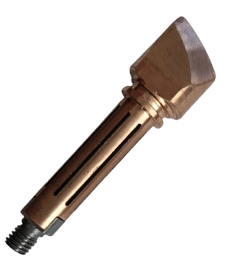

Démonstrateur d'un fer à fieter le cuir chauffant à l'induction
Amélioration et fiabilisation d'un démonstrateur de fer à fileter le cuirchauffant à l'induction pour une société de production d'outils pour le cuir destinés aux sociétés de luxe et ultra-luxe.
Démonstrateur d'un fer à fieter le cuir chauffant à l'induction


Pour des raisons de confidentialité, certaines sections peuvent ne pas être détaillées.
Objectifs du projet
Durant ce stage de 6 mois, j’ai participé au développement d’un démonstrateur de fer à fileter le cuir pour un client, visant à remplacer la chauffe résistive traditionnelle par un système à induction capable d’atteindre la température souhaitée en moins d’une minute, avec suivi et interface utilisateur.
Les principales tâches de ce projet incluent différents aspects techniques :
- Conception electronique : découverte et maîtrise progressive des aspects électroniques du démonstrateur, notamment le fonctionnement et la mise en œuvre d’un pont en H pour piloter la chauffe, ainsi que l’intégration des capteurs, de l’alimentation et de l’interface avec le système embarqué. Cette partie m’a permis de renforcer significativement mes compétences en électronique.
- Conception mécanique et optimisation : conception et amélioration de la géométrie de l’outil pour optimiser la transmission de chaleur.
- Développement logiciel et régulation : intégration d’un système embarqué utilisant des capteurs NTC pour la mesure de la température, des capteurs additionnels pour le retour d’information, et des modules de régulation PID assurant un contrôle précis de la température.
- Tests et validation : réalisation d’essais pour observer le comportement du système de régulation, ajustement des coefficients PID, ainsi que tests complémentaires pour étudier la transmission thermique entre les matériaux et sélectionner la forme optimale de l’outil
- Documentation et soutien technique : rédaction de documents techniques et logiciels pour assurer le suivi clair du projet et faciliter la continuité pour les équipes suivantes.
Le client avait pour but de développer une nouvelle gamme de produit tout en adoptant une démarche écologique et économique afin d'innover sur le marche de l'artisanat du cuir.
Voici le cahier des charges de ce projet :
- Résultats attendus :
- Une chauffe rapide : la température doit atteindre la consigne en moins d’une minute
- Une température uniforme : la température doit rester constante pendant toute la durée de la chauffe
- L'appareil doit se mettre en mode écologique (50°C) lorsqu'il est inutilisé
- Une interface utilisateur simple et intuitive
- Durée : 6 mois
- Compétences mises en œuvre :
- Conception électronique
- Conception mécanique
- Développement logiciel embarqué
- Régulation thermique PID
- Analyses des données et tests
Le phénomène d'induction
Le phénomène d'induction est un principe fondamental de l'électricité découvert par Faraday. Il se produit lorsqu'un champ magnétique variable crée un courant électrique dans un conducteur à proximité. En d'autres termes, le simple mouvement d'un aimant autour d'un fil ou d'une bobine peut générer de l'électricité sans qu'il soit nécessaire d'utiliser une source de tension externe.
Ce principe est utilisé dans de nombreux dispositifs, comme les dynamos de vélo ou les alternateurs de voiture, permettant de convertir un mouvement mécanique en énergie électrique de manière efficace.

Fonctionnement
L'alimentation et le pont en H génèrent un courant alternatif dans le circuit résonant LC, ce qui chauffe la panne et dont la température est mesurée puis régulée par un PID en jouant sur la fréquence de la PWM, les données étant affichées à l'écran.
Choix des materiaux
Le choix des matériaux a été soigneusement étudié pour maximiser l'efficacité thermique et la durabilité de l'outil, tout en respectant un équilibre optimal entre les propriétés magnétiques et thermiques. Optimisation du transfert thermique
Afin d’assurer un fonctionnement efficace de l’outil, la maîtrise de la transmission thermique entre les différentes pièces en contact doit être optimisée. Cette transmission conditionne non seulement la rapidité de montée en température de la panne, mais aussi la stabilité thermique et la performance énergétique de l’ensemble.
Plusieurs paramètres influencent cette transmission, notamment :
- La conductivité thermique des matériaux en contact
- L'épaisseur et la géométrie des interfaces
- La qualité du contact mécanique (ajustement, contact)
Des études comparatives ont été menées sur plusieurs matériaux afin de déterminer, dans un premier temps, lesquels présentaient les meilleures propriétés de conduction thermique.
Ensuite, il y a eu un travail sur l’optimisation des contacts.
Contenu de l'onglet 3...
Contenu de l'onglet 3...